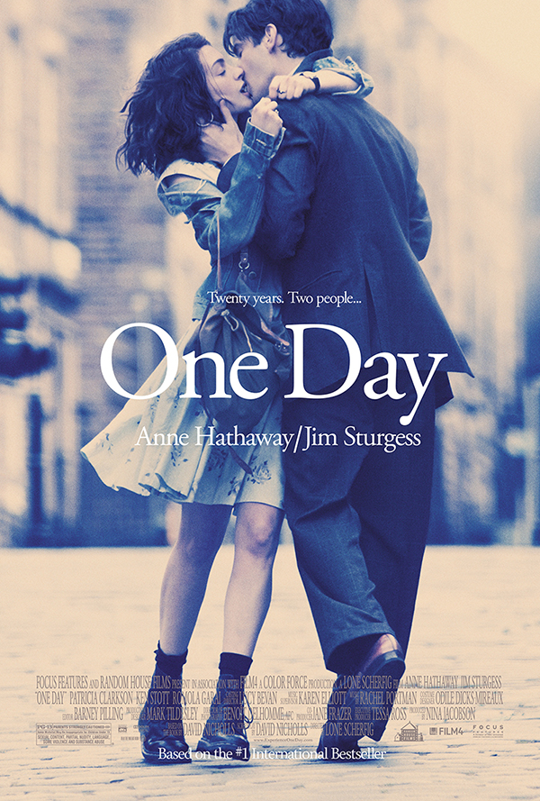

更多搜尋結果

安海瑟薇
Anne Hathaway
4
2
喜歡
分享
微信分享小叮嚀
目前暫時還沒有直接分享到微信朋友圈的功能，請點選您手機
右上角三個點
選項中的分享功能就可以分享到微信。
不用再提醒
下次再提醒
我的刷片度
我已經看過
2
部
7%
電影列表（
18
部）
最熱門
最新
最好評
顯示
全部
可在線看
我沒看過
1
2017-07-13
想看電影
知無涯者
7.4
在線看